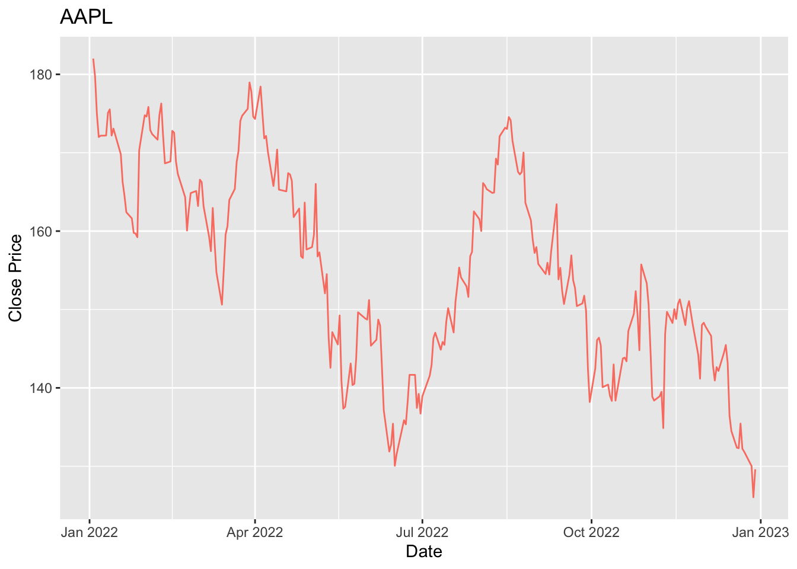

4 Análisis Exploratorio de Datos
companias = c("AAPL", "MSFT", "AMZN", "NVDA", "GOOGL","BRK-B","GOOG", "META","UNH","XOM")
precios <- tq_get(companias,
from = "2022-01-01",
to = "2023-04-30",
get = "stock.prices")
head(precios)## # A tibble: 6 × 8
## symbol date open high low close volume adjusted
## <chr> <date> <dbl> <dbl> <dbl> <dbl> <dbl> <dbl>
## 1 AAPL 2022-01-03 178. 183. 178. 182. 104487900 181.
## 2 AAPL 2022-01-04 183. 183. 179. 180. 99310400 178.
## 3 AAPL 2022-01-05 180. 180. 175. 175. 94537600 174.
## 4 AAPL 2022-01-06 173. 175. 172. 172 96904000 171.
## 5 AAPL 2022-01-07 173. 174. 171. 172. 86709100 171.
## 6 AAPL 2022-01-10 169. 172. 168. 172. 106765600 171.precios %>%
ggplot(aes(x = date, y = close, color = symbol)) +
geom_line() +
labs(title = 'Precio cierre por accion from 2022-01-01 a 2023-04-30', y = 'Close Price')
4.1 Comportamiento Inicial Series
Promedio móvil y Rezagos
Promedio movil (hablar de que se trata, para que sirve y coger dos acciones una que depronto tenga mas picos que otra y comparar)
for (i in unique(precios$symbol)){
stock_data <- ts(precios[precios$symbol == i, "close"])
plot(stock_data, type = "l", main = paste("Promedio Móvil con n=5 para ",i))
ma <- rollmean(stock_data, k = 5, align = "right")
lines(ma, col = "red")
#par(mfrow=c(10,1))
}


#legend("topright", legend = c("Serie de Tiempo", "Promedio Móvil"),col = c("black", "red"), lty = 1, cex = #0.8) Estacionalidad (Descomposicion Aditiva)
Hablar para que sirve, escribir la forma t+s+r
for (i in unique(precios$symbol)){
stock_data <- ts(precios[precios$symbol == i, "close"], frequency=5)
decomposition <- decompose(stock_data, type = "additive")
plot(decomposition)
}


 ## Estacionaridad
## Estacionaridad
Explicar que es
Prueba Dickey- Fuller (ADF) Series naturales
Dar un contexto de la prueba, escribir las hipotesis, por cada accion definir si es o no estacionaria. sobre las que no son estacionarias, debemos evaluar alternativas como la diferenciacion
* Hipótesis nula: La serie de tiempo tiene una raíz unitaria. La serie de tiempo es no estacionaria.
- Hipótesis alternativa: La serie de tiempo no tiene raíces unitarias. La serie de tiempo es estacionaria.
for (column in unique(precios$symbol)) {
stock_data <- ts(precios[precios$symbol == column, "close"])
result <- adf.test(stock_data)
cat(paste("Acción: ", column, "\n"))
cat(paste("ADF Estadística: ", result$statistic, "\n"))
cat(paste("Valor p: ", result$p.value, "\n"))
for (key in names(result$critical)) {
cat(paste(" ", key, ": ", result$critical[key], "\n"))
}
cat("-----------------------\n")
}## Acción: AAPL
## ADF Estadística: -2.05566854881785
## Valor p: 0.553122778288091
## -----------------------
## Acción: MSFT
## ADF Estadística: -1.26008325178021
## Valor p: 0.888678271671602
## -----------------------
## Acción: AMZN
## ADF Estadística: -2.57789631611209
## Valor p: 0.332861799653268
## -----------------------
## Acción: NVDA
## ADF Estadística: -1.16775576501797
## Valor p: 0.910561973384199
## -----------------------
## Acción: GOOGL
## ADF Estadística: -1.85896174733311
## Valor p: 0.636088172532902
## -----------------------
## Acción: BRK-B
## ADF Estadística: -1.63954392454958
## Valor p: 0.728632436555145
## -----------------------
## Acción: GOOG
## ADF Estadística: -1.88587340131609
## Valor p: 0.62473759407997
## -----------------------
## Acción: META
## ADF Estadística: -1.69491663799333
## Valor p: 0.705277784013442
## -----------------------
## Acción: UNH
## ADF Estadística: -2.58340138363729
## Valor p: 0.330539917063923
## -----------------------
## Acción: XOM
## ADF Estadística: -3.45252088823684
## Valor p: 0.0475229915156887
## -----------------------ACF y PACF
Hablar para que sirven que normalmente sirven para definir los ordenes del modelo autoregresivo (AR) y del modelo de media movil (MA)… Interpretar solo en una acción.
precios_df=as.data.frame(precios)
for (i in unique(precios$symbol)) {
stock_i <- subset(precios, symbol == i)
stock_ts <- ts(stock_i$close)
stock_acf <- acf(stock_ts,plot = FALSE)
stock_pacf <- pacf(stock_ts,plot = FALSE)
par(mfrow=c(1,2))
plot(stock_acf, main=paste("ACF para la acción", i))
plot(stock_pacf, main=paste("PACF para la acción", i))
}


Diferenciación
Explicar como se usa y para que sirve.Ventajas y Desventajas
precios <- precios %>%
group_by(symbol) %>%
mutate(diferenciado1 = c(NA, diff(close, differences = 1)[-length(close)]))
head(precios)## # A tibble: 6 × 9
## # Groups: symbol [1]
## symbol date open high low close volume adjusted diferenciado1
## <chr> <date> <dbl> <dbl> <dbl> <dbl> <dbl> <dbl> <dbl>
## 1 AAPL 2022-01-03 178. 183. 178. 182. 104487900 181. NA
## 2 AAPL 2022-01-04 183. 183. 179. 180. 99310400 178. -2.31
## 3 AAPL 2022-01-05 180. 180. 175. 175. 94537600 174. -4.78
## 4 AAPL 2022-01-06 173. 175. 172. 172 96904000 171. -2.92
## 5 AAPL 2022-01-07 173. 174. 171. 172. 86709100 171. 0.170
## 6 AAPL 2022-01-10 169. 172. 168. 172. 106765600 171. 0.0200Prueba Dickey- Fuller (ADF) Series diferenciadas
Concluir si sirvio para volver estacionarias las series.
symbols_no_estacionarios <- setdiff(unique(precios$symbol), "XOM")
for (column in symbols_no_estacionarios) {
stock_data <- precios[precios$symbol == column, ]
stock_data_omit_na <- na.omit(stock_data$diferenciado1)
result <- adf.test(stock_data_omit_na)
cat(paste("Acción: ", column, "\n"))
cat(paste("ADF Estadística: ", result$statistic, "\n"))
cat(paste("Valor p: ", result$p.value, "\n"))
for (key in names(result$critical)) {
cat(paste(" ", key, ": ", result$critical[key], "\n"))
}
cat("-----------------------\n")
}## Acción: AAPL
## ADF Estadística: -6.66340145927991
## Valor p: 0.01
## -----------------------
## Acción: MSFT
## ADF Estadística: -7.21412735449904
## Valor p: 0.01
## -----------------------
## Acción: AMZN
## ADF Estadística: -6.74472720274422
## Valor p: 0.01
## -----------------------
## Acción: NVDA
## ADF Estadística: -6.01198490395914
## Valor p: 0.01
## -----------------------
## Acción: GOOGL
## ADF Estadística: -8.12030932167298
## Valor p: 0.01
## -----------------------
## Acción: BRK-B
## ADF Estadística: -6.44380476381158
## Valor p: 0.01
## -----------------------
## Acción: GOOG
## ADF Estadística: -8.095317497104
## Valor p: 0.01
## -----------------------
## Acción: META
## ADF Estadística: -7.55972583872282
## Valor p: 0.01
## -----------------------
## Acción: UNH
## ADF Estadística: -7.36858131320366
## Valor p: 0.01
## -----------------------